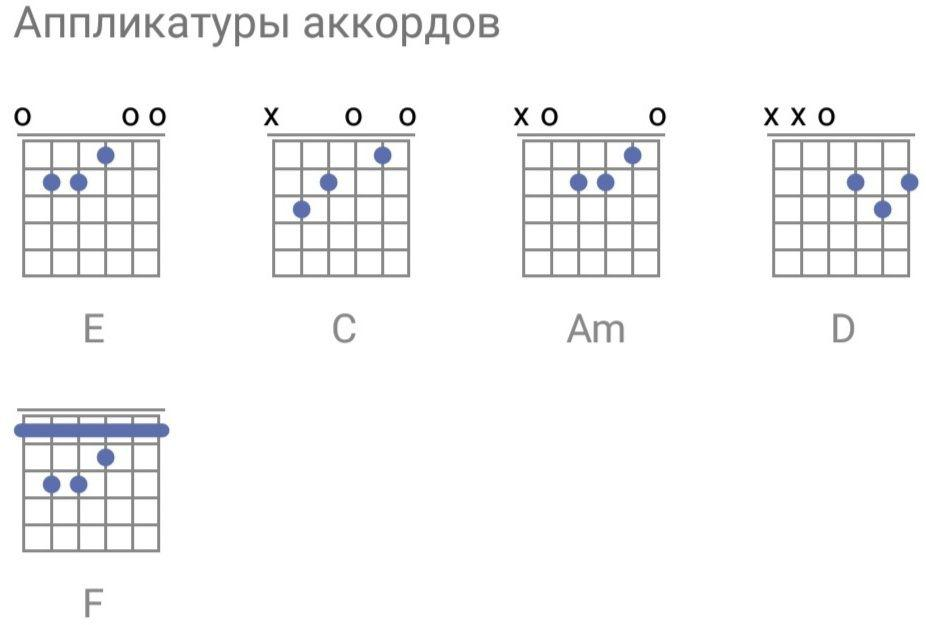

Король и Шут - Мастер приглашает в гости
E C Am D Вечером к столу Мастер пригласил E C Am D Верного слугу и его спросил : Am F "Сколько раз ты встречая моих гостей C E Am Никогда никого за дверь не провожал F C E И не поймешь теперь что я втайне держал" Припев: Am F C E В те дни когда я в настроении бываю Am F C E Сидя у огня черепа перебираю Преданный слуга улыбнулся тут : "Я любил всегда свой нелегкий труд По ночам сижу за ножом слежу Фигурки вырезаю из костей С ремеслом дружу обожаю гостей" Припев: